|
| ||
|
| ||
Robert Carter, MSDN Online Technical Writer
December 30, 1998
Contents
Way back when, "Data Visualization Part I: Prepping Your Data" went live. It discussed some very easy, and to my eyes very cool, ways to introduce graphical displays of database-derived information. When I wrote it, I promised to follow up with another article that discusses how to get your newly-minted pages live.
It took a long time for me to understand this subject enough to write an article, though I've taken some solace from hardcore developers that lament how complex it is to access databases over the Internet (thank you, Dr. GUI), but dagnabbit, it was still frustrating.
So with this article, I'm going to attempt a depth-defying stunt: write a piece about how to create and access pages on a local staging server--Peer Web Services for Microsoft® Windows NT® Workstation--and then publish them to a remote production server. I created databases in both Microsoft Access and Microsoft SQL Server™ 6.5, and for each section I will devote some space to the additional steps SQL Server database requires to create, access, and upload to a production server.
Be warned, though, that to meaningfully discuss what it takes to access and manipulate database records from a Web page, I'll be plunging into discussions of serious coding practices such as objects, methods, and programming models across a range of Microsoft technologies.
For Part I, we created a simple example database, and generated an Active Server Pages (ASP) file to access and display it over the Internet by using Access's Publish to the Web wizard. This is done by selecting the "Save as HTML" option from the File menu and stepping through the dialog boxes that appear.
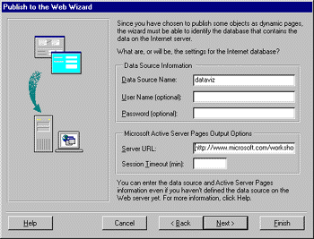
In Part I, we glossed over the significance of the Data Source Name (DSN). In short, the DSN is a convention Microsoft established for identifying unique databases when it created the Open Database Connectivity (ODBC) programming interface. ODBC was created to eliminate the need to include device-level code to access a specific database. Instead, programmers could execute database commands using ODBC, and all the device-dependent calls and procedures could be buried in ODBC drivers. If you will eventually host this application using an ISP, you should contact them to see if you can specify your own DSN (chances are you can, if your name does not conflict with another DSN on the same server).
Assuming you have direct access to the computer that will host your database, you can create and modify a DSN yourself. To set up a DSN, activate the ODBC Control Panel. You'll be presented with a seven-tabbed dialog box like the one in Figure 2. Select the "System DSN" tab.
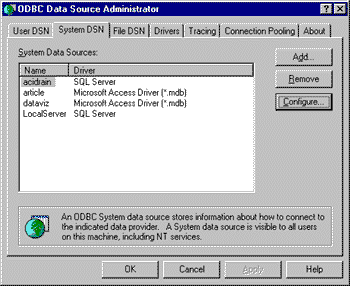
To add your ODBC driver, click the Add button. You'll be asked which driver you want to use; highlight one and click the Finish button.
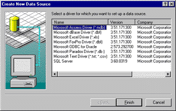
If you want to connect to an Access database, the process couldn't be easier. After selecting the misleading Finish button (you're not done yet), you'll be given yet another dialog box that asks you to give some more information about the data source you want to set up.
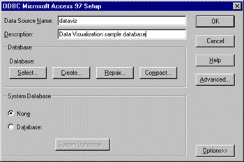
In the "Data Source Name" textbox, type in the name of the DSN you entered earlier in the Access "Save as HTML" menu item. If you want to give a little more information for posterity, fill out a description of the database the DSN connects to. If you've already created your database, click on the Select button, and then navigate to the appropriate database file. Congratulations, you now have an Access DSN ready to roll.
We recommend you use SQL Server exclusively if you expect your site to be heavily trafficked. The reason is due to lots of complex things with names like "connection pooling" that SQL Server handles more efficiently than Access. While Access is a great tool to use to set up your databases, if you want to be able to handle lots of visitors simultaneously, and have your site be able to crank out pages for them as quickly as possible, it's worth the effort to upgrade. Setting up a local ODBC driver to connect to a SQL Server database has a few extra steps. Selecting Finish in the dialog mentioned above starts up a SQL Server ODBC connection wizard.
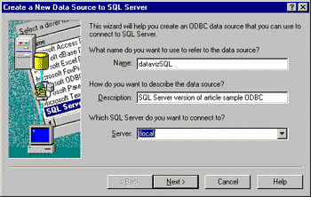
The first dialog asks for information similar to that asked for by the Access connection wizard: the name of the database, a description, and the specific SQL Server instance (unlike Access, you won't connect to a file but a device). Fill in the text boxes as you did for the Access ODBC driver. In the drop-down menu asking which SQL Server you want to connect to, select the relevant server; if you're running SQL Server on your own machine, select "(local)".
After you've responded to the "Name" and "Server" dialog box items (the "Description" item is optional), the Next button will become active. Click on it. Another dialog box will appear to ask how you want to access the SQL Server device.
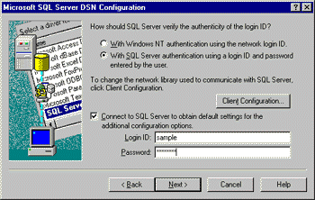
As the first question in the dialog box implies, you can access the SQL Server device in one of two ways: via Windows NT authentication or SQL Server authentication. Either will work locally, because you can configure the access for each method in your role as system administrator. For anonymous Web access, it's best to select the SQL Server option, and to use a Login ID and Password that reflect the permissions you want to grant. For instance, should this client be able to run update queries?, execute applications?, and so on. You can configure multiple DSNs to offer a range of access privileges.
Using SQL Server Enterprise Manager I created a new database called "datavis," and then configured a new login ID of "sample" by selecting "Logins" from the Manage menu. I limited access for this user to the "datavis" database, as shown in the figure below.
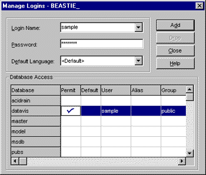
Getting back to the ODBC configuration process, I checked the SQL Server authentication option, activated the "Connect to SQL Server to obtain default settings for the additional configuration options" check box, entered the Login ID and Password settings for the login I just created in SQL Enterprise Manager, and clicked Next.
The next set of dialog boxes will be preset to your SQL Server default configuration. The only change you'll need to make is to point the default database to where the data resides. If you've already created the database within SQL Server, it will appear in the drop-down menu; if not, go create it now and start the whole process again.
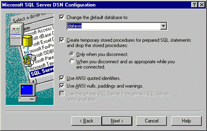
Unless you know you want to change any of the other options, assume the default SQL Server options are sufficient as you click through the remaining dialog boxes. In the final dialog box, you are given the option of testing the data source connection. Give it a go. If the test is not successful, clear the entry in the ODBC System DSN tab and try again.
Now that we've set up our ODBC drivers, we need to put some snappy code in our Web pages to enable it to access our database. Before I begin deconstructing the code, though, let's get clear on the notion of connections and sessions, and how Microsoft handles them through some object models and APIs it's developed. The diagram below presents the sequence of steps involved in fulfilling a client computer's request for a Web page with database content.
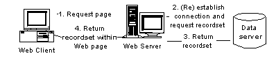
Step 1 should be pretty familiar. In Step 2, to establish a connection to a database server, we use a COM component called Active Data Objects (ADO). ADO in turn has its own objects that allow you to access ODBC databases (and a lot of other types of data). It is installed by default when you install ASP (or, you can download the latest version of ADO and its documentation  ). As we'll see below, when you insert database-access code in your Web page, you'll use objects from the ADO interface to call and manipulate the data.
). As we'll see below, when you insert database-access code in your Web page, you'll use objects from the ADO interface to call and manipulate the data.
We can connect to databases (or, for that matter, almost any kind of file or device that stores data) in lots of different ways. I'll talk about three types of connection objects: Application, Session, and Recordset.
An application-level connection, established through the ASP Application object, creates a connection that can be used by anyone requesting a page from a specific virtual directory on your server. A hit counter that tallies the number of visits to an area of your site is something you could store in an application-level object.
A Session object, on the other hand, is unique to every individual that accesses your site (and is not tied to a specific virtual directory). A session is probably the most useful way to handle how visitors interact with your database if you believe they will query your database multiple times, or they query your database once, but their query returns so much data that you need to break up its display into multiple pages.
The ability to manage a session, by the way, is one of the key benefits ASP delivers. As you may already know, the HTTP protocol is stateless: the Web server isn't required to know anything about the computer requesting a particular page (which is why we can allow anonymous access). As a result, though, it can't do any preprocessing or customization to prepare for a request from a specific user.
It's just like those little machines you buy newspapers from: You request the page (put a quarter in the machine), you get the page (the latch unlocks to let you get your newspaper), but that's it. With ASP, though, you can identify whether someone just bought a newspaper, and you can give them the option to get something different this time back. ASP circumvents the statelessness of HTTP by storing cookies on the client's browser; if the client computer requests a URL that has a cookie associated with it, the contents of the cookie are added to the HTTP request string that the client computer's browser assembles.
ASP handles all the overhead for tracking user sessions automatically, such as generating and updating cookies, storing user information on the server, and so on. All you need to do is assign a database connection to the Session object. All session information is held for twenty minutes: you can change it by modifying the SessionTimeout property. If a user accesses the database again before the twenty minutes are up, the connection will still be open (and the timer reset). If more than twenty minutes go by, the session ends, and any information from the old session is lost.
Finally, if you want to get specific about the data itself, you can use the Recordset object. While the Recordset object actually belongs to the ADO database component (Application and Session are built directly into ASP), you still access and manipulate it through ASP code. The Recordset object is a reference to a specific database table. It can be a base table, or the result table generated from a specific query.
Each of these objects have a set of properties, collections, and methods associated with them, much more than I will go into in this article. The MSDN Online Library has lots of information on ASP, starting with http://msdn.microsoft.com/library/tools/aspdoc/iiwawelc.htm . For ADO, your best bet is to download the latest version of ADO and its documentation  .
.
To sum up, if you want your database access to have application scope (that is, tie it to whenever someone accesses pages from a virtual directory), use the Application object. If you want to tie access to specific users, try the Session object. And if you want to work with a specific set of data, use the Recordset object.
Now that we've discussed how to establish a connection with a database through an ASP or ADO object, we can finally discuss some code that makes it happen.
When we used the Access "Save as HTML" wizard, it generated some code for us:
<%
If IsObject(Session("datavis_conn")) Then
Set conn = Session("datavis_conn")
Else
Set conn = Server.CreateObject("ADODB.Connection")
conn.open "datavis","",""
Set Session("datavis_conn") = conn
End If
%>
The <%...%> delimiters tell us that we're dealing with ASP code. The If...Then conditional tests for whether a connection with the database has already been established for that user. If yes, then this request will use the connection already established. Using an existing connection is faster and requires less server overhead. The connection test uses the Microsoft Visual Basic® Scripting Edition (VBScript) IsObject function, which returns True if the expression within the parentheses references a valid object.
If a connection with the database has not been previously established, we process the Else code, which builds a new connection from scratch. To do that, we first create an object reference called conn (and because we're using VBScript to create the object reference, we need to use the Set statement). We set conn to the pre-defined Server object method CreateObject and, using the appropriate parameter syntax ("[Vendor.]Component[.Version]"), identify that the server component we want to create is a connection to an ADO-compatible database using the ADO Connection object ("ADODB.Connection").
We physically establish the connection to the datasource by applying the open method to the Connection object. The optional parameters on the open method are ConnectionString, UserID, and Password. We use our DSN, "datavis", as the connection string, and leave the other parameters blank.
Note If you wanted to limit access to this database to specific users or pages, you could create different user groups and require the appropriate user names and passwords.
Finally, because the CreateObject method only has page scope by default (that is, the created object would be automatically destroyed by the server when it finishes processing the page), and because we want to work in the context of a user session, we give our connection session scope by storing an instance of our newly-created connection object in the Session object variable datavis_conn.
Now that we have established a connection, we can access the data therein. In "Data Visualization Made Easy Part I," we used the "Save as HTML" wizard of Access to build a basic file. Once we had our basic.asp file, we customized it in a text editor to give it the funky graphing displays George developed.
We accessed the pages using ADO's Recordset object. Here's a sample snippet from charter.asp, the database we used for Part I:
sql = "SELECT Max(Apples) AS MaxApples FROM tblFruits "
Set rs = Server.CreateObject("ADODB.Recordset")
rs.Open sql, conn, 3, 3
lMaxApples = rs.Fields("MaxApples")
First we assign a SQL statement to the variable sql. Next, we instantiate the rs object (using the Set statement because rs is an object). We assign rs another Server.CreateObject method, this time to reference the ADO Recordset object. We use the ADO Open method again, only this time we're opening a Recordset, so a slightly different syntax applies.
To be totally accurate, using the Open method sets up a cursor that can point to the records generated by our SQL statement. In our case, we open the cursor, run our SQL statement, and, in the SQL statement itself, assign the result of our MaxApples query to the variable lMaxApples. Although we specified a type of cursor and lock type), those arguments are optional (the most stringent options for the cursor will apply by default: the cursor can only scroll forward through the records, and the data cannot be altered). For more details on the cursor and lock options available, review the ADO documentation (C:\Program Files\Common Files\System\ado\Docs\default.htm if you install the ADO download  to its default location).
to its default location).
Of course, how you configure your SQL statements to get at your data is another story (or many stories) entirely. Trying to construct a multi-table query, debating whether to use stored procedures to optimize server performance, or exploring how to allow visitors the ability to update databases themselves are each major projects in themselves, and not within the scope of this article.
Because ASP is a server-based technology, to be able to view an ASP page in your browser it first has to travel through a server. Using Windows NT Peer Web Services (PWS), add information about which directories will host the pages, and give those directories a virtual name and the proper configuration. In other words, you need to create a virtual directory.
To create a virtual directory, double-click on the PWS icon in your system tray. In the dialog box that appears, select the Advanced icon in the left pane. A dialog box similar to the following will appear:
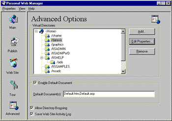
Note On my staging server, I like to check the "Allow Directory Browsing" check box. As your site gets more complex, allowing directory browsing affords you the luxury of not having to remember the names of every file you may want to display, just the hosting directories.
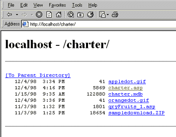
If you don't see your directory listed, you'd best add it. Select the Add button to generate a dialog box similar to the following:
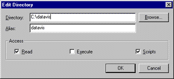
In the "Directory" field, fill in the physical location of the folder on your server. The "Alias" item, by contrast, refers to the virtual directory the Web server will create; here you enter what needs to appear in the address of your URL. For example, by selecting the alias "datavis", to access that folder in my browser I type "http://localhost/datavis/..."
Note It is not necessary to have the database itself in your virtual directory, only the .asp files that refer to it. If you're working with SQL Server, your data is somewhere else anyway. With an Access database, the path to the file is embedded in the DSN, so there is no need to keep it in the virtual directory with your other Web pages.
By the way, it's always a good idea to invite people to test your site before it goes live. If you only have a dial-up connection to the Internet on your staging server, and want to give people access to your site while you're connected, you can. All you need to do is figure out the IP address of your connection, forward it to your test group via e-mail, and have them type it directly into their browser's address bar (make sure they append the correct directory information after the IP address).
If you're running Microsoft Windows 95 or 98, selecting Run from the Start menu and typing "winipcfig" (without the quotes, of course) will tell you your IP address. If you're running Windows NT, you can download any of a bunch of utilities from Download.com  . They come up when you type "IP Address" in the Search box.
. They come up when you type "IP Address" in the Search box.
Once you feel your site is ready for prime time , you've got to do two things: get all the necessary files (pages, images, databases) over to your ISP, and get your ISP to do whatever configuration and setup you can't (or it won't let you) do directly. The file transformation is pretty straightforward, especially if your ISP gives you FTP access to your site to upload files.
I'm going to cover two ways to get your files over to your ISP. One uses a third-party FTP tool, WS_FTP. The other uses the Microsoft Web Publishing Wizard, which is included with a bunch of Microsoft products, including Internet Explorer and Peer Web Services. (If you don't have the Web Publishing Wizard, you can access it from Windows Update  .)
.)
If you want to use the Web Publishing Wizard, I suggest a little prep work to make sure it goes smoothly. First, use Internet Explorer to view and log on to your FTP site. If you don't know your FTP address by heart, try using your standard HTTP address but preface it with FTP instead, thus: ftp://www.microsoft.com. If the address is correct, chances are you'll be prompted with a login dialog box similar to the one shown below asking for a user name and password. If it doesn't work, call your ISP and ask them for the correct FTP address and, while you're at it, their preferred method for uploading files.
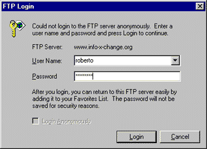
Enter your name and password (it should have been provided to you by your ISP), and then you'll see a whizzo view of your site. Check the title of your page and the URL in the address bar to make sure it didn't get redirected from what you originally typed in. What appears there is the address you'll send your files to).
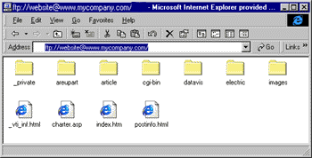
If everything's worked, excellent, we can now start the Web Publishing Wizard. To access this, select Programs from the Start menu, choose Microsoft Web Publishing, and then choose the Web Publishing Wizard. The second dialog box you encounter has a neat feature that gives you the ability to choose either an entire folder or an individual file to publish.
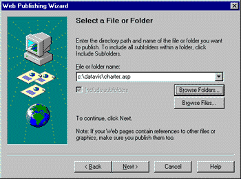
Next we encounter a dialog box asking us to identify the Web server to upload files to. Click the New button and enter a descriptive name for the area you'll publish your file or folder to. Press the Next button and you'll be confronted with a dialog box with two entries, one labelled "URL or Internet address:" and another labelled "Local directory." In the URL text box, type in the exact location that appeared in the address bar of Internet Explorer when you viewed your FTP site. If you want to put your uploaded files into a new directory, attach the name of the directory at the end of your URL. If you are uploading a folder that doesn't already exist on the FTP site, it will be automatically created for you.
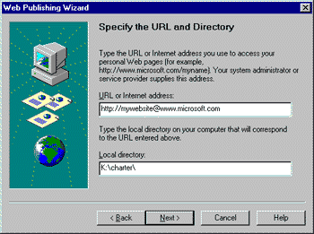
Pressing Next cues the Wizard to access the URL you just indicated. If necessary, the login dialog will reappear; fill out the appropriate user name and password and press OK. If you open up your Internet Explorer window again and select "Refresh", you should see your new directory or files appear.
Another option is to use a third-party tool such as WS_FTP, one of my favorites. After starting it up, you can configure a connection to your FTP site directly, including the user name and password if you wish. Pressing Connect will then establish a connection, and a two-pane window appears. On the left pane is your local computer, on the right your FTP site. You can now transfer files back and forth between the panes, as well as create and delete folders and files.
To configure the DSNs for the servers that will host your databases, you'll have to contact your ISP. They'll essentially duplicate the process you followed for setting up the ODBC DSNs on your local server and, in the case of SQL Server, a little more configuration work.
For Access databases, the process is straightforward. You upload the database to the folder you want to store it in, and forward that path to your ISP, along with the name of the DSN and any user name or password you wish to require as well. Your ISP configures the DSN and you're ready to roll.
For SQL Server databases, the process is a little more complex, primarily because your database is stored within a larger SQL installation rather than a monolithic file as with Access. Create a backup file, transfer that file over to your ISP, and then have them restore the database directly on their server. They'll also have to create an ODBC DSN on that server, just as you did on your local staging server.
To begin, open SQL Enterprise Manager and start the server that holds your database. From the Tools menu, select "Database Backup/Restore." A dialog box like the following will open:
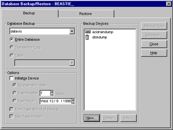
Click the New button to generate a backup file. You'll see a dialog box as is shown in Figure 18. Enter the name of your backup file in the "Name" textbox, and if you want to store the file somewhere other than the default C:\MSSQL\BACKUP\ directory, click on the button labelled "..." and navigate to the folder you prefer. When you're done, select the Create button.
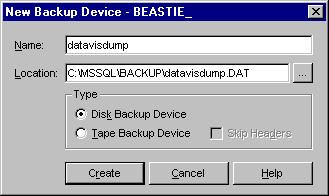
You will be returned to the main backup/restore dialog box. This time, click the Backup Now button. Click the OK button on the dialog box that appears and SQL Server will create the backup file.
When the backup is complete, follow the procedure for FTPing the file over to your FTP site described above. Contact your ISP, give them the path of the backup file, and let them restore the database to your production server; any special permissions, groups, users, or stored procedures you have created for that database will be restored as well. Finally, ask your ISP to set up a SQL Server ODBC DSN.
You should now be able to view any pages you've uploaded using the URLs for your production server.
If you want to host your site over the Internet, but haven't settled on an ISP, below are some sites to help with your search. Be warned, though, that there are a lot of ISPs out there. It's best to have a list of "must haves" and "nice to haves" for your site. I needed my ISP to support database hosting and ASP on Windows NT Server. Chat capability, multiple e-mail accounts, and anonymous FTP were secondary.
The unfortunately-named ASPHole  has a list of ISPs that focus on Windows NT, ASP, and IIS
has a list of ISPs that focus on Windows NT, ASP, and IIS  . I like that the list is manageable and rated. In addition, ASPHole is a good portal into the world of non-Microsoft ASP support.
. I like that the list is manageable and rated. In addition, ASPHole is a good portal into the world of non-Microsoft ASP support.
Another site I found helpful for locating ISPs was HostIndex  . I particularly liked its search capability, which let me filter by operating system and a large array of options (everything from Microsoft SQL Server support to non-profit discounts).
. I particularly liked its search capability, which let me filter by operating system and a large array of options (everything from Microsoft SQL Server support to non-profit discounts).
The List  is one of the first, and probably the largest, listing of ISPs around. It doesn't have a search capability yet, and, curiously, you can only search by state or area code (given that many ISPs have "800" numbers for technical support, and this is the Web, for crying out loud, I see no reason to limit my ISP to my immediate neigborhood). As always, Yahoo
is one of the first, and probably the largest, listing of ISPs around. It doesn't have a search capability yet, and, curiously, you can only search by state or area code (given that many ISPs have "800" numbers for technical support, and this is the Web, for crying out loud, I see no reason to limit my ISP to my immediate neigborhood). As always, Yahoo  has a directory with a bunch of resources you might want to try.
has a directory with a bunch of resources you might want to try.
In my forays in search of an ISP (I had to make sure what I was writing was true, right?), I also asked some friends whom I respectBased on their opinions, I sent out e-mail queries to my top few candidates (based on price, options, and the professionalism and helpfulness of their site). I settled on DataReturn  because they responded right away, and were flexible to my needs. They were also independently recommended by a couple of associates.
because they responded right away, and were flexible to my needs. They were also independently recommended by a couple of associates.
Don't be afraid to shop around. If you like someone's service and responsiveness, but get quoted a lower price for comparable features, go back to your preferred choice and see if they'll match the lower price. If you plan on registering and hosting your own domain name, you can be even more flexible, because people will bookmark URL's to your site (not your ISP's virtual directory).
Sorry it's taken me so long to get Part II out the door. I spent a lot of time getting lost in complex SQL queries, when I should have been focussing on issues more immediately germane to Web access. As a result of my work, though, I've ended up making choices about platform (Windows NT Workstation) and technologies (Peer Web Services, ADO, ASP, Access and SQL Server) that I feel are the right combination of robust and accessible.
The focus of this article has been to introduce some of the basic components of database access from the Web. I discussed ASP and database interfaces such as ADO and ODBC, and gave an overview of how to access the database we created in Part I. In addition, we configured DSNs and virtual directories for a local development server, and presented two ways of publishing that data on a live site. In the event that some of you have yet to embark on finding an ISP to host your site, I also gave you some starter links to aid you in your search.
If there are steps in the process I've overlooked, or there are other resources and mechanisms that you feel are worth mentioning, please let me know. Anything to ease the pain.
Did you find this material useful? Gripes? Compliments? Suggestions for other articles? Write us!
© 1999 Microsoft Corporation. All rights reserved. Terms of use.